NA‑02
iPhone · iPad · Mac
Dayfolio
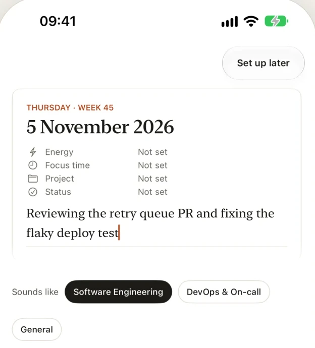
A calm work journal. One page a day, in the shape of your job. Start a journal from a template made for your work, group your journals in folders, and turn any week into a report.
NinjaApps presents Dayfolio · a work journal · one app for the Mac, one for iPhone and iPad · a journal from each template · folders · reports for any week · bought once · no account · no subscription
On iPhone
A 30-second film of Dayfolio on iPhone, with sample journals and no sound:
- Write one line on the first page, and keep the page.
- Start another journal from a template made for your job.
- Turn the page to the day before.
- Hold and slide to set a value.
- Fill the fields in one line.
- Tick off what you did, and see what is still open.
- Your days, as a report ready to send.
Open the film on its own (MP4, 13.1 MB).
At work
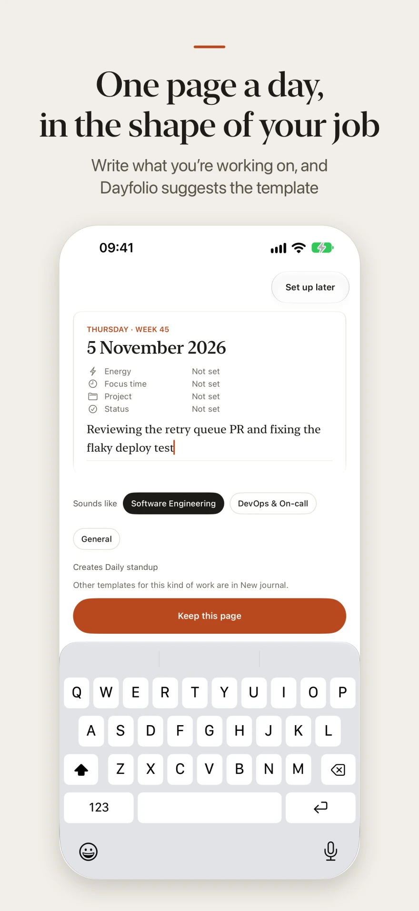
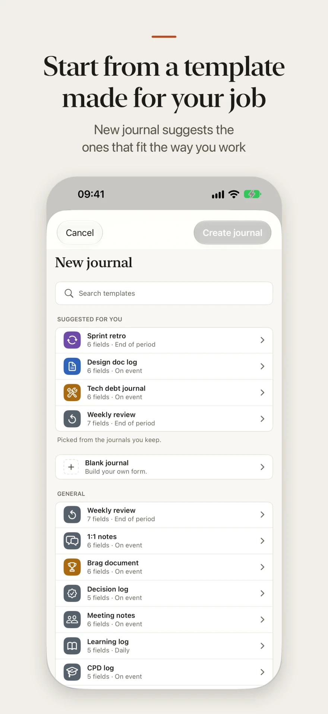
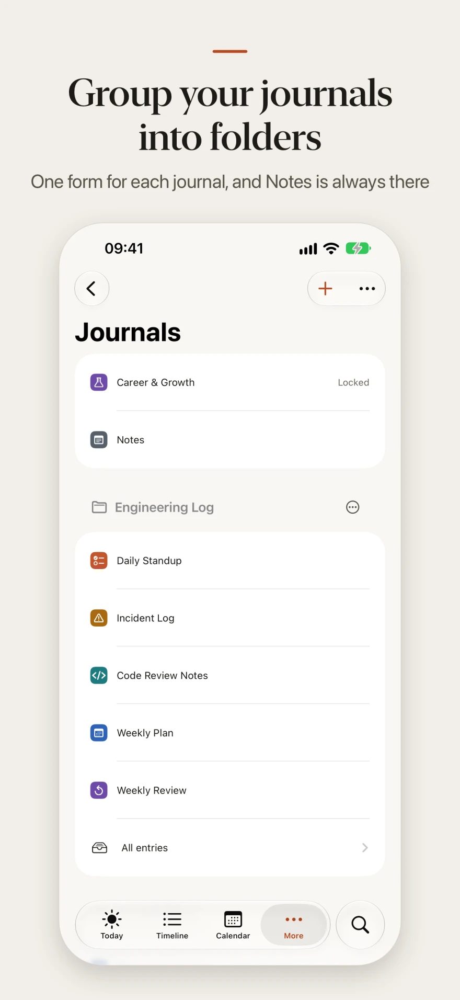
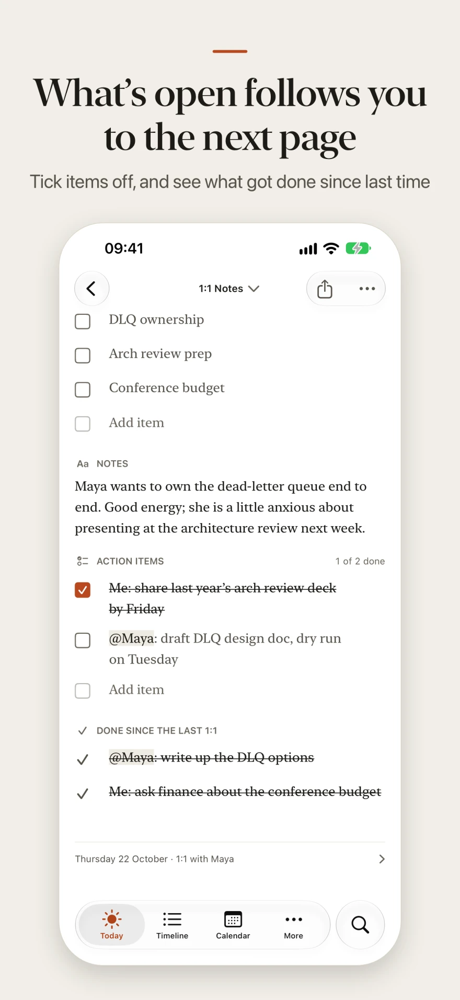
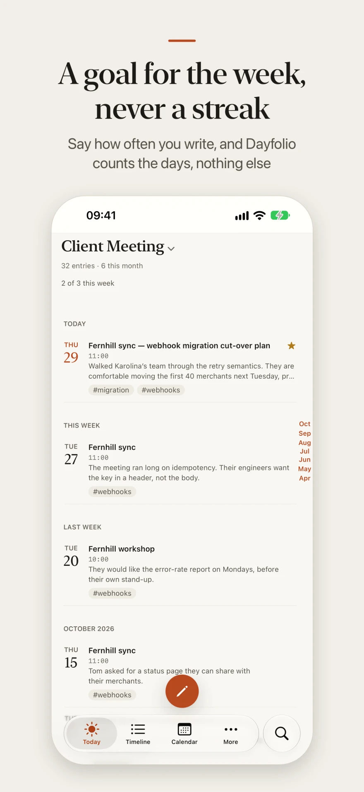
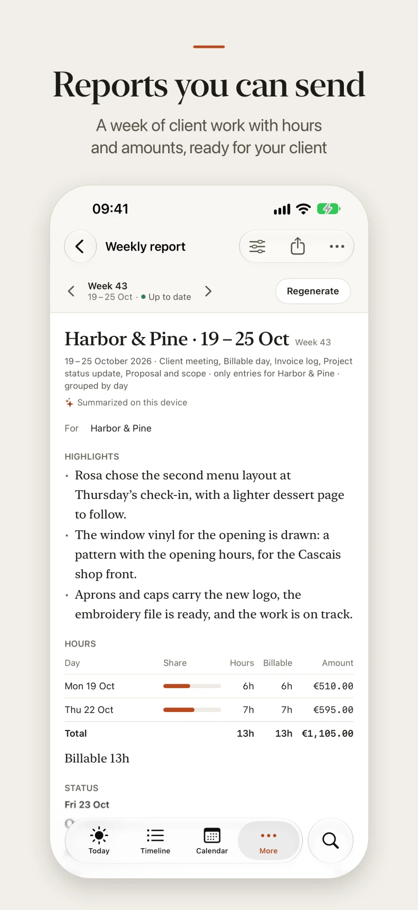
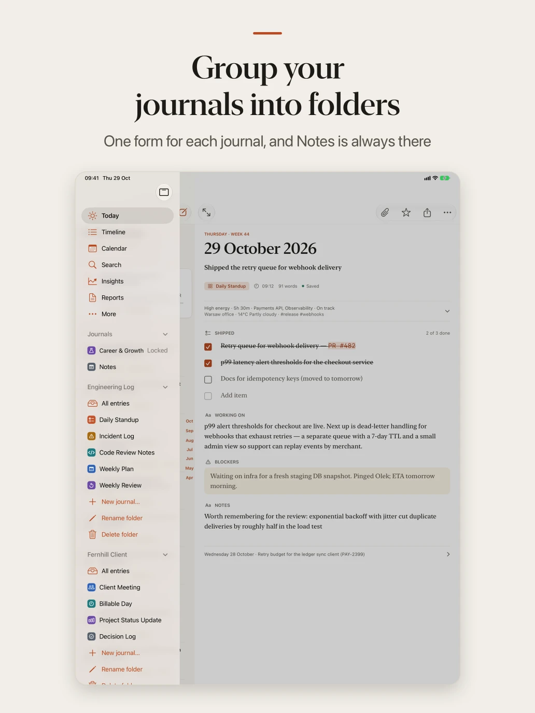
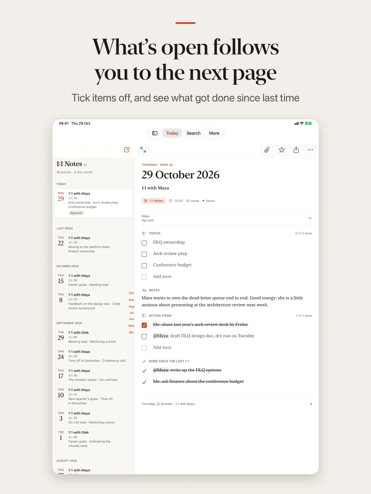
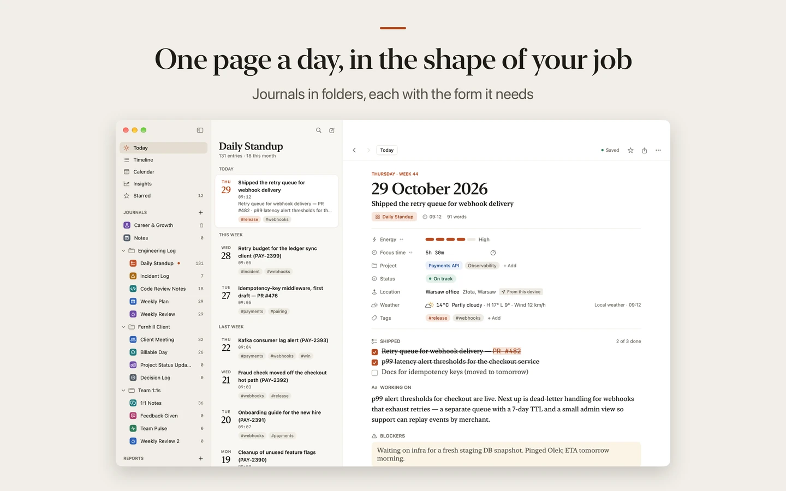
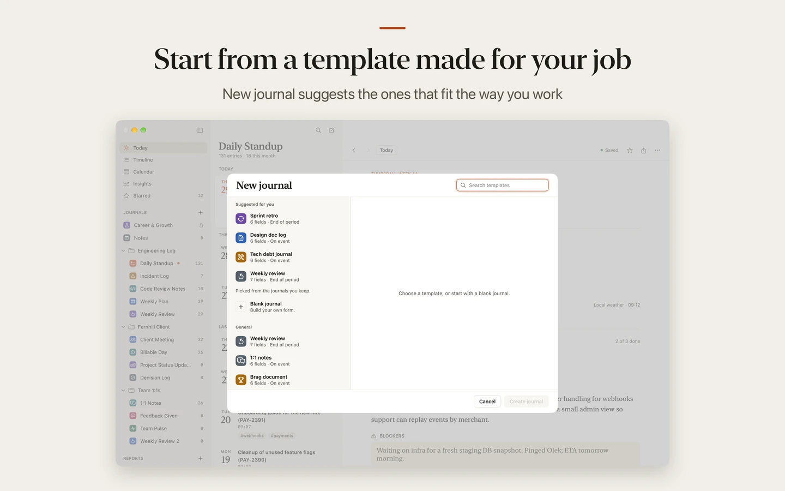
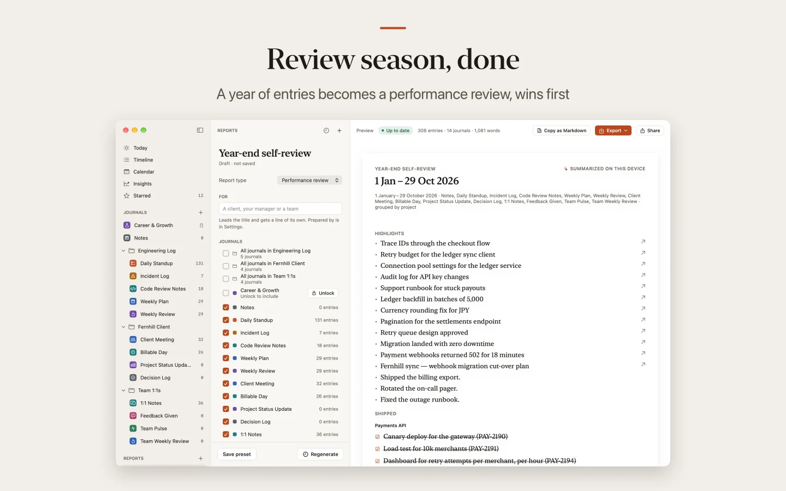
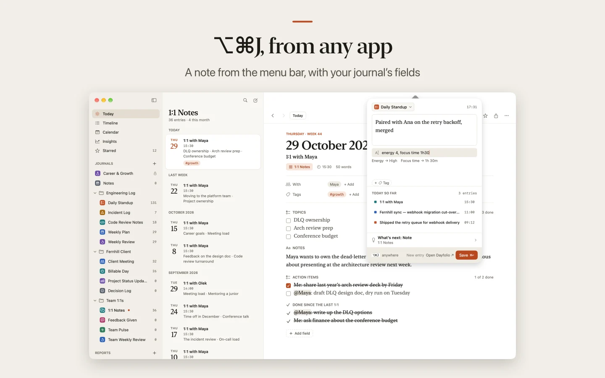
The pictures show sample journals, made for the pictures. Dayfolio follows your device’s light or dark appearance, or the one you choose in its settings.
The details
Keep a journal for each kind of page you write: a daily standup, a weekly 1:1, a client’s meetings, a career log. Each journal has one form, with the fields that matter to you, such as energy, focus time, status, blockers, a checklist or meeting notes, instead of a blank page. Later, that structure turns your days into a timeline, insights and reports you can hand to your manager or client. Dayfolio is two apps, one for the Mac and one for iPhone and iPad, and your journals follow you between them through your own iCloud.
A journal for each kind of page
- A library of 75 templates in 16 packs: software engineering, management, consulting, sales, healthcare, education, legal, construction, research, freelance and more
- Pick one and it becomes a journal of its own, named for it. New journal lists the ones that fit your work first, under Suggested for you, and a blank journal is there too.
- Change a journal’s form as you like: add, reorder, rename and retype fields. It never touches another journal, and entries keep the shape they were written in, so a change never rewrites your past.
- Make the same template again for a second client and the new journal is numbered, “Client meeting 2”. Duplicate a journal to start from yours.
- Group journals in folders, one level deep and optional. Open a folder to read all its journals together, newest first, or filter Search and Reports to it.
- Notes is always there, for everything that has no form of its own.
- Lock, reminders, location and weather, and a weekly goal are set for each journal. A folder never opens a locked journal.
- Choose which journals Today shows, in Settings, if one is not enough
- In a 1:1, carried-over items follow the person: say it is with Maya and the page fills from your last 1:1 with Maya, never with Sam
Write quickly, wherever you are
- Rich text with headings, lists and nested lists, checklists, quotes, code blocks, images and files
- Checklists carry what you did not finish to your next entry. Ticked items are struck through, a Completed list shows what you ticked off last time, and the field says “3 of 5 done”.
- An optional weekly goal for a journal, such as three times a week. It counts the days you write. There are no streaks, and a missed week just starts a new one.
- Delete an entry or a folder by mistake and Undo is right there
- A Fill line that turns "energy 4, focus 2h30" into field values, with the preview before you commit
- On iPhone and iPad: Home Screen and Lock Screen widgets, a Control Center control, Siri, Shortcuts and the Action Button, the Share sheet, and photos, videos and document scans straight into an entry
- A running timer in a Live Activity, on the Lock Screen and in the Dynamic Island
- On the Mac: quick entry from the menu bar with Option-Command-J, and a link that writes a note from a terminal or a git hook
- Reminders at the times you choose, per journal, that you can answer from the notification
- Fill a meeting's time and attendees from your calendar, read on your device
- Each entry can note where you wrote it and what the weather was, if you turn that on for the journal
Find and look back
- Timeline and calendar across all your journals
- Search with filters for journals, folders, tags, people and projects, including text inside PDFs and images
- Open a person or a project to see every entry that mentions them, and what is still open from your lists
- Insights chart your ratings, durations and statuses over time
Turn your days into reports
- Weekly, monthly, performance review and director update reports, and a year-end self-review to start from
- Narrow a report to a folder, one client, person or tag, and group it by date, project or person
- Hours that add up: split time by billable or not, give a project an hourly rate in its own currency, and export the time table as CSV
- Address a report with a For line and a Prepared by line
- Save report setups and regenerate them for any week or month
- Optional highlights written on your device with Apple Intelligence, on devices that support it
- Export to Markdown, PDF and Word, or share and print. Every export tells you what it made and where, with Show in Finder on the Mac and Share on iPhone and iPad, and a retry if it fails.
Private by default
- No account and no tracking. Dayfolio collects no data, and nothing you write is sent to us.
- Lock any journal with Face ID or Touch ID. A journal you lock stays out of widgets, notifications, Spotlight and the app switcher.
- Sync between your devices through your own iCloud, encrypted (end-to-end with Advanced Data Protection)
- Your journals stay yours: a Dayfolio archive restores everything, and its format is public. On the Mac, mirror chosen journals to a folder of Markdown files, such as a notes vault or a Git repository.
The privacy policy says exactly what Dayfolio does with location, calendar, camera, microphone, notifications and iCloud.
What you need
An iPhone or iPad with iOS or iPadOS 26 or later, or a Mac with macOS 26 or later, Apple silicon or Intel. The optional highlights, and the on-device model that fills fields when you log by voice, need a device with Apple Intelligence; everything else works without it. Dayfolio is a native app, built with SwiftUI, and it is in English.
One price, everything included, no subscription
Dayfolio is two apps: Dayfolio: Work Journal for Mac, and Dayfolio: Daily Work Log for iPhone and iPad. Each is bought once, with one price and everything included: no free version to outgrow, no in-app purchases and no subscription. If you use both, you buy both. They sync through your own iCloud.
Not what you need? Apple handles refunds at reportaproblem.apple.com. The support page has the details.